주간 콘텐츠
엔드 콘텐츠

로스트아크의 레이드 콘텐츠로 클리어 보상으로 '골드'를 획득가능한 콘텐츠입니다.
캐릭터당 3회, 원정대당 6개의 캐릭터로 골드 획득이 가능합니다.
기본적으로 입장레벨을 기준으로 캐릭터가 갈 수 있는 상위 레이드 3개로 골드를 받게 됩니다.
3개의 레이드 이후에는 골드 보상은 받지 못하지만 골드 이외의 재료는 보상으로 받을 수 있기 때문에 필요한 경우 나머지 레이드들을 돌아도 됩니다.
6회 제한
로스트아크는 원정대별로 6개의 캐릭터만 골드를 획득할 수 있습니다. 보통 6회 제한이라고 하는데 7번째 캐릭터부터는 다른 재료들은 동일하게 획득할 수 있지만 골드는 획득할 수 없습니다.
항상 문제가 되는 부분입니다. 6회 제한을 풀자니 인게임 경제가 박살나고 제한을 하자니 7개 이상 캐릭터를 키우는걸 방해하고 뭘 하든 문제가 생기는 부분이라 게임사에서 매번 신중하게 접근하는 문제이긴 합니다만 아직까지는 6회 제한을 유지하는 중입니다.
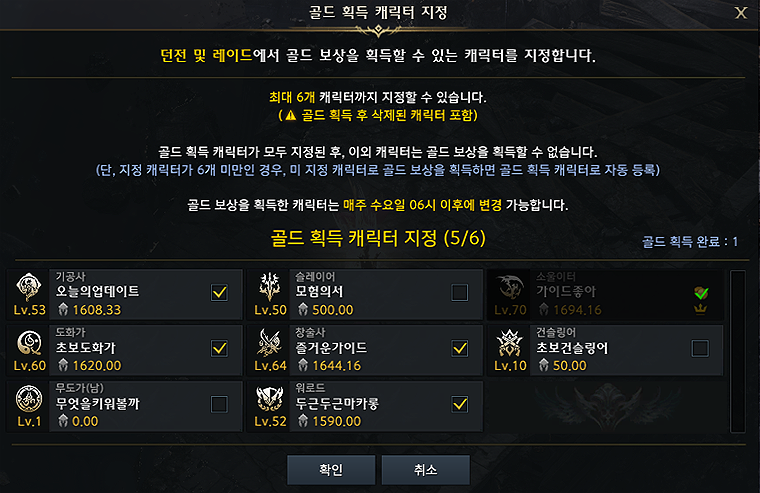
골드 보상을 획득할 캐릭터는 [게임 메뉴](단축키 ESC) [골드 획득 캐릭터 지정]을 통해 사전에 미리 설정해 둘 수 있습니다.
최대 6개 캐릭터까지 지정해둘 수 있으며, 한번 지정된 상태는 계속 유지됩니다.
6개 미만 캐릭터를 지정한 경우, 지정하지 않은 캐릭터 중 선착순으로 골드 보상을 획득합니다.
6개 캐릭터를 모두 지정한 후, 지정하지 않은 다른 캐릭터로 던전에 입장할 경우, 던전을 클리어하여도 골드 보상은 획득할 수 없습니다.
매주 수요일 06시에 모든 캐릭터의 골드 획득 귀속 상태가 해제됩니다.
지난 주에 골드 보상을 획득했던 캐릭터는 금주에 자동으로 골드 보상 획득 캐릭터 지정 상태로 설정됩니다.
싱글 모드
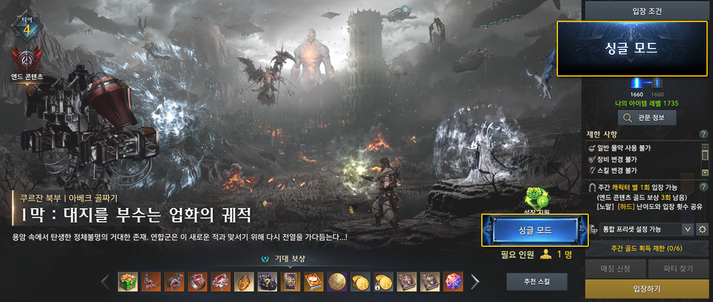
싱글 모드는 일부 엔드 콘텐츠를 '1인 입장'하여 도전 할 수 있는 콘텐츠 입니다.
보상은 노말과 비슷한 수준이지만 클리어시 획득하는 골드가 일부 '캐릭터 귀속 골드'로 지급됩니다.
싱글 모드에서는 여러가지 지원 효과를 받을 수 있습니다.
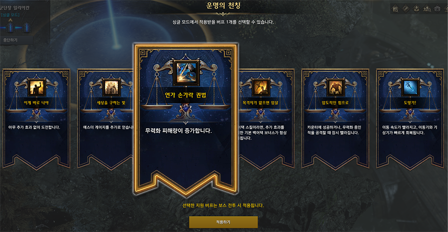
'운명의 천칭'은 전투에 도움이 되는 다양한 버프 중 하나를 선택하여 지원받을 수 있는 시스템입니다.
일부 버프는 콘텐츠 또는 클래스 특성에 따라 다른 버프가 제공됩니다.
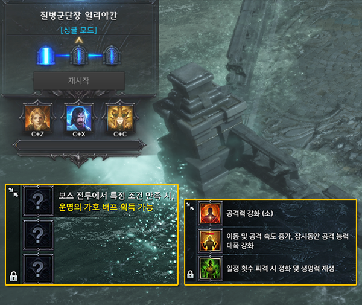
'운명의 가호'는 전투에 도움이 되는 추가 효과를 획득할 수 있는 시스템입니다.
운명의 가호는 보스 전투 중, 특정 조건을 만족할 때 획득할 수 있습니다.
운명의 가호는 관문별 최대 3개까지 획득할 수 있습니다.
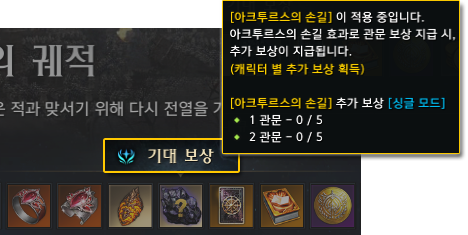
싱글 모드에서는 클리어 보상 및 더보기 보상을 추가로 획득할 수 있는 '아크투르스의 손길' 이 적용됩니다.
아크투르스의 손길은 일부 엔드콘텐츠에서 클리어 보상 및 더보기 보상을 추가로 획득할 수 있는 시스템입니다.
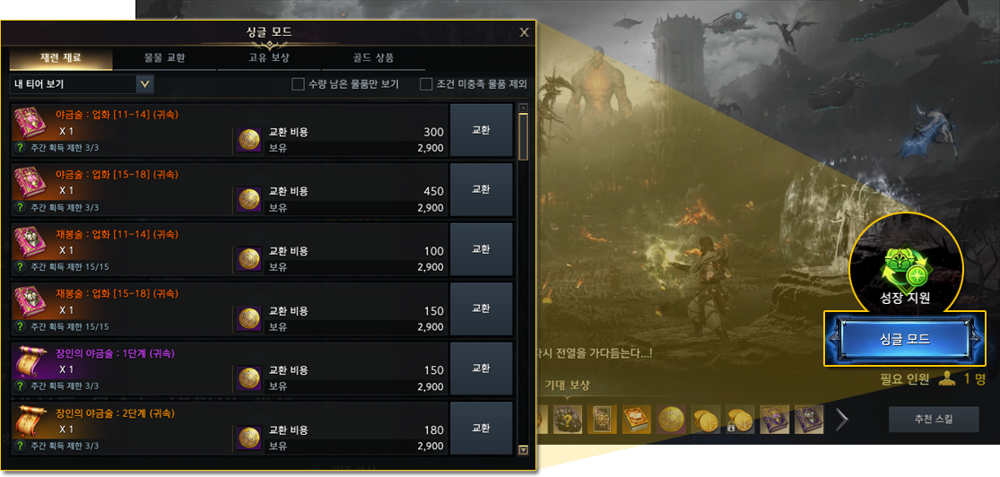
싱글 모드가 제공되는 콘텐츠는 난이도와 무관하게 클리어 시 '클리어 메달'을 획득할 수 있습니다.
클리어 메달은 대도시의 '싱글 모드 교환' NPC 또는 싱글 모드 입장 UI의 '보상 교환' 버튼을 눌러 다양한 아이템으로 교환할 수 있습니다.
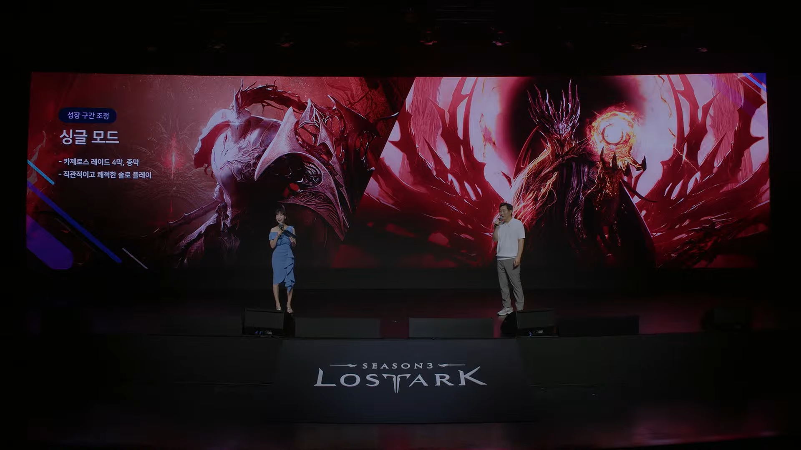
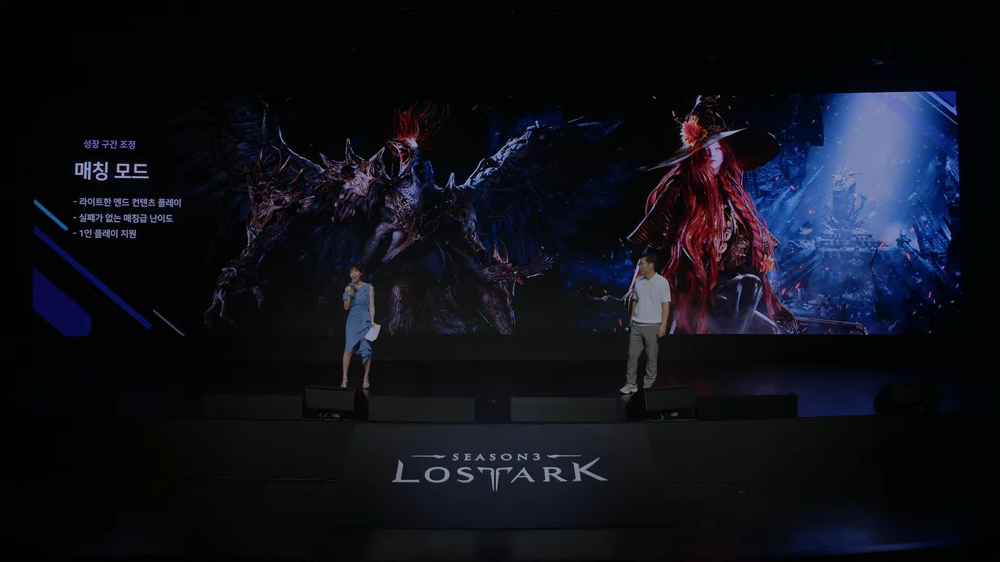
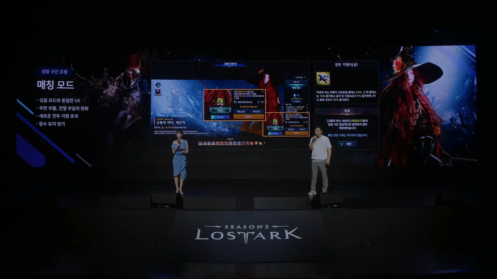
2026 로아온 업데이트에서 4막/종막/세르카 싱글/매칭 난이도가 추가되었습니다.
4막과 종막은 기존과 같은 싱글 난이도가 추가되었고 세르카에서는 매칭 난이도라는게 새롭게 추가되었습니다.
매칭 난이도는 싱글 난이도와는 다르게 다른 플레이어와 같이 플레이가 가능하고 혼자서도 플레이가 가능합니다.
매칭으로도 클리어가 가능할 수준으로 난이도가 낮기 때문에 싱글 난이도처럼 부담없이 플레이가 가능합니다.
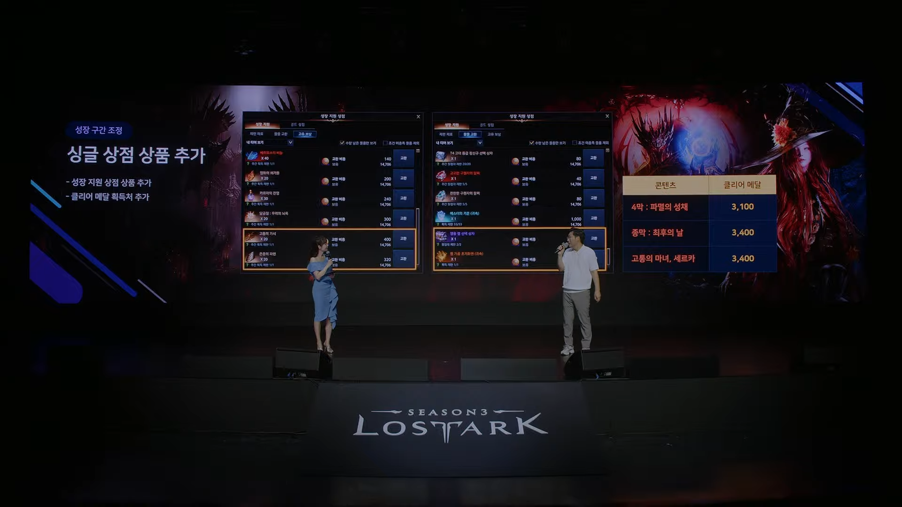
싱글 상점에도 물품이 추가되어 싱글 난이도로도 세르카 계승이나 성당 코어 교환이 가능해졌습니다.
낙원
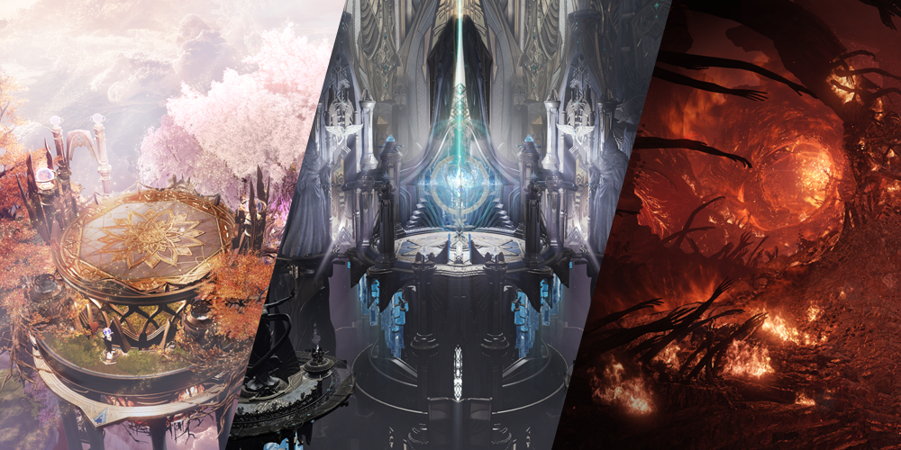
낙원은 주단위 보정 콘텐츠로 천상 / 증명 / 지옥 3가지로 나뉩니다.
낙원은 기본적으로 스킬 포인트를 제외한 모든 스펙 및 내실이 적용되지 않고 낙원에서 획득한 유산 장비만으로 스펙이 적용됩니다.
천상에서 장비를 파밍한 후 증명에서 기록을 새워 순위를 매긴 후 순위별로 보상으로 지옥 열쇠를 받아 지옥에서 귀속 보상을 받는 방식입니다.
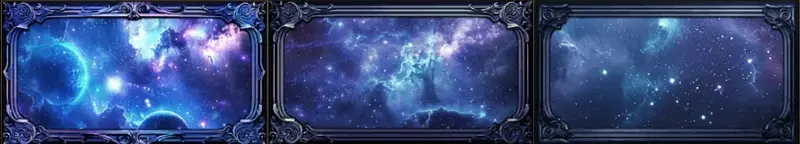
30위 이내의 최상위권의 경우 시즌별 증명 배너와 칭호를 얻을 수 있습니다만 과금이나 배럭 입장권 몰아주기 등 필요한 것들이 많아서 뉴비나 복귀가 노리기에는 무리가 있습니다.
천상
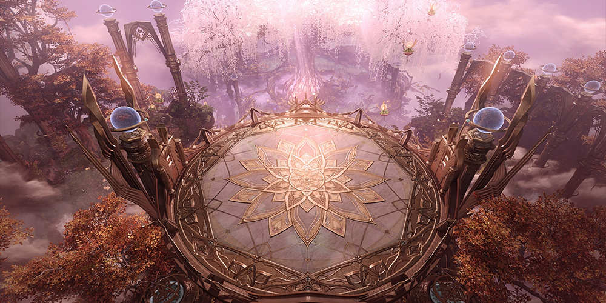
천상은 낙원에서만 적용되는 장비인 유산을 획득하는 던전으로 주간 5회 입장이 가능합니다.
천상은 클리어한 증명 단계를 기준으로 오픈이 되기 때문에 증명을 최대한 높은 단계까지 클리어한 이후에 천상을 돌면 됩니다.
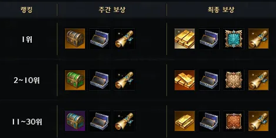
순위권을 노리기 위해선 높은 등급의 유산 장비 / 복원 / 공명 이 3가지가 필요한데 이를 위해서는 최대한 많이 천상을 돌아야 합니다.
천상 입장은 기본적으로 주마다 5회 제공되며 추가로 입장권을 파밍해서 입장이 가능한데 입장권을 파밍하는 방법은 크게 3가지가 있습니다.
과금 / 지옥 보상 / 원정대 입장권 몰아주기 3가지 방식인데 뉴비/복귀가 하기에는 어려운 방법들입니다.
천상 입장권을 지옥 보상으로 선택하는 경우 다른 귀속 재료들을 포기해야만 하는데 지옥에서 얻을 수 있는 귀속 재료들이 상당히 많습니다. 그 재료들을 포기하고 순위권 경쟁을 위해 천상 입장권을 선택하는건 뉴비/복귀 유저가 하기에는 어려운 선택입니다.
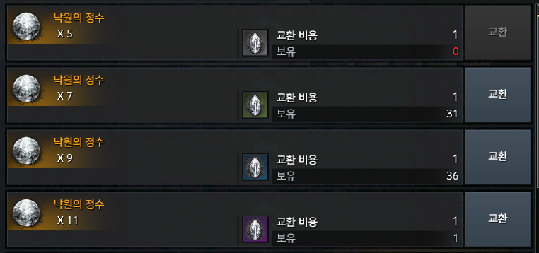
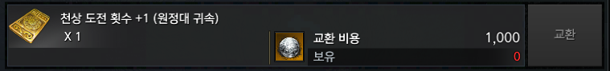
원정대 입장권은 부캐릭터들의 복원석을 원정대 공유 천상 입장권으로 바꿔 본캐릭터에 몰아주는 방식인데 낙원은 1640만 되면 입장이 가능하고 아이템 레벨에 상관없이 복원석 획득량이 모두 동일하기 때문에 원정대에 최대한 많은 1640 캐릭터를 만들어 입장권을 몰아줘야 합니다.
1640 캐릭터를 만들기 위해선 캐릭터 슬롯을 구매하고 지식전수나 점핑권을 구매해야 하는데 보통 순위권 유저들은 모든 캐릭터 슬롯을 개방하여 1640 캐릭터를 채워서 입장권을 몰아주기 때문에 이걸 따라가기 위해서는 꽤나 큰 돈과 시간이 필요합니다.
지옥 보상과 마찬가지로 뉴비/복귀 유저가 사용하기에는 어려운 방법입니다.
증명
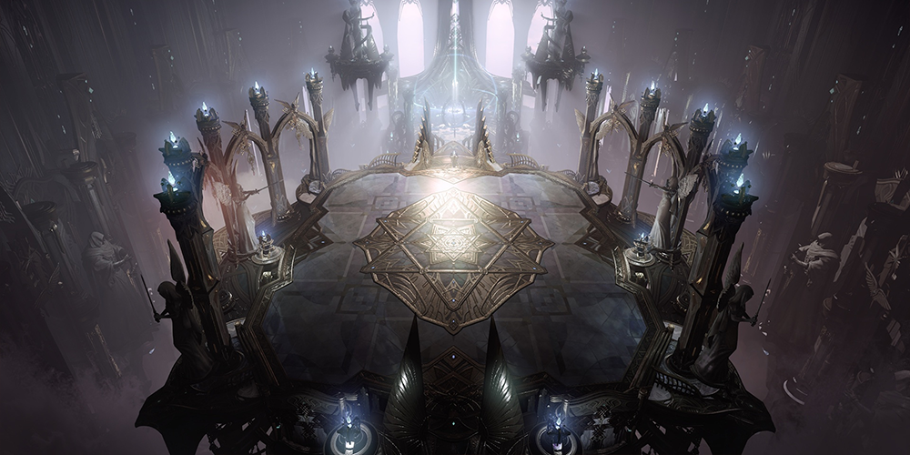
증명은 제한시간 안에 보스를 잡는 콘텐츠로 유산을 제외한 다른 모든 스펙이 적용이 되지 않습니다.
증명 클리어 시간에 따라 주간 순위가 산정되고 순위에 따라 지옥 입장 열쇠가 보상으로 주어지기 때문에 높은 단계의 증명을 최대한 빠르게 클리어하는게 중요합니다.
마지막주에 얻을 수 있는 순위권 보상은 기간제가 아니라서 마지막주에는 순위권 경쟁이 치열합니다.
순위권 경쟁을 위해선 높은 스펙(편린 장비), 시간, 실링, 고점 빌드 등 필요한게 너무 많아서 몇번이고 말하지만 뉴비/복귀 유저가 하기엔 너무 어렵습니다.
지옥
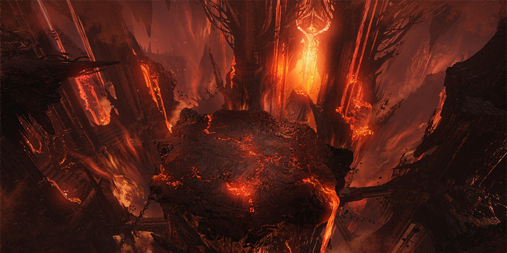
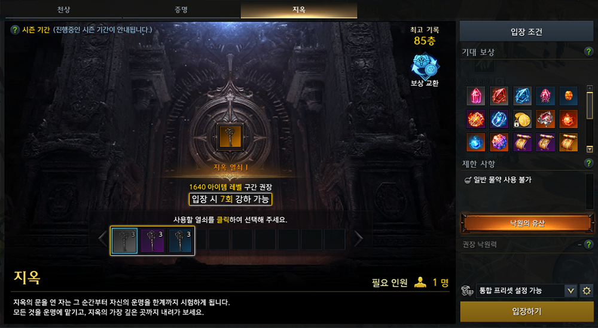
낙원의 핵심입니다. 증명 주간 순위에 따라 입장 열쇠를 보상으로 받을 수 있고 열쇠 등급에 따라 강하 시도횟수가 달라집니다.
강하가 끝나면 보상을 획득할 수 있는데 보상의 종류는 매번 무작위로 선정되며 높은 단계일수록 보상량이 많아집니다. 보상은 전부 캐릭터 귀속입니다.
보상 관련 자세한 내용은 ➡️ 지옥 보상 효율 | Loatto 참고하시면 됩니다.
지옥 보상으로 저레벨 구간 스펙업이 굉장히 쉬워졌습니다.
특수 재련, 융화재료, 귀속 골드, 재련 보조 재료 등 부캐릭 육성에 도움이 되는 재료들만 보상으로 나와서 진짜 골드 하나 안쓰고 지옥 보상으로만으로도 1730레벨이 가능할 정도입니다.
급하게 키우는 캐릭이 아니라면 지옥 보상으로 최대한 효율적으로 키우시는걸 추천드립니다.
나락
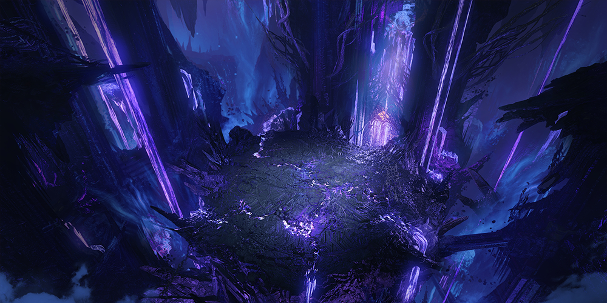
나락은 지옥의 상위 콘텐츠로 지옥보다 더 많은 보상을 얻을 수 있지만 강하 시 조건에 따라 사망하여 보상을 얻을 수 없게 됩니다.
➡️ 지옥 보상 효율 | Loatto 마찬가지로 여기서 나락 보상을 확인할 수 있는데 지옥과 비교했을 때 5배 정도의 보상을 얻을 수 있다고 생각하시면 됩니다.
랜덤 유물 각인서 상자가 보상으로 추가되었고 8단계 이상부터는 귀속 8레벨 보석도 나올 수 있습니다.
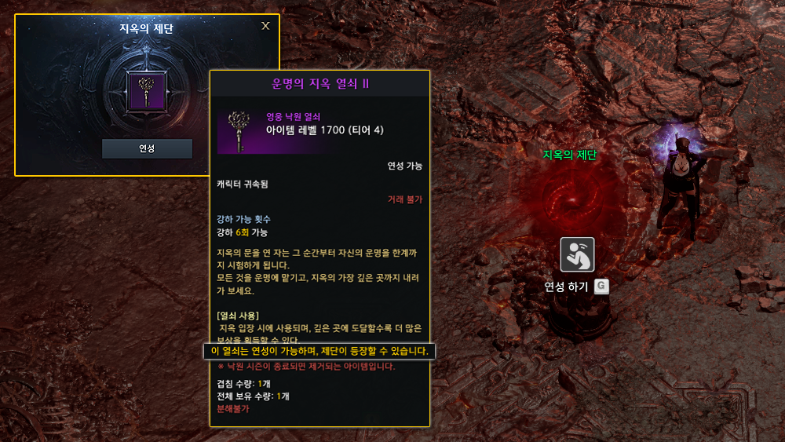
나락에 입장하기 위해선 나락 열쇠가 필요한데 나락 열쇠는 지옥 열쇠를 연성하여 확률적으로 얻을 수 있습니다.
지옥 입장시 0층에서 20% , 50층과 100층에서 100% 확률로 제단이 등장하는데 제단에서 연성 가능한 지옥 열쇠를 연성 시 40% 확률로 나락 열쇠를 획득하고 60% 확률로 등급 변경(-2~+2)이 됩니다.
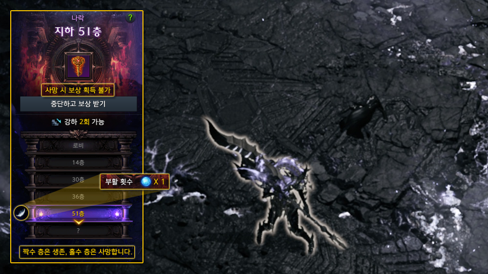
나락 입장 시 선택한 열쇠(화염/서리)에 따라, 강하 후 도달한 층수(홀수/짝수)에 의해 생존 여부가 달라집니다.
나락에서는 기본적으로 1회의 부활 기회가 제공됩니다.
부활 횟수를 모두 소진한 상태에서 사망하는 경우 보상 기회가 소멸됩니다.
'중단하고 보상 받기' 버튼을 선택하면, 해당 층에 해당하는 보상 상자가 등장하며 나락이 종료됩니다.